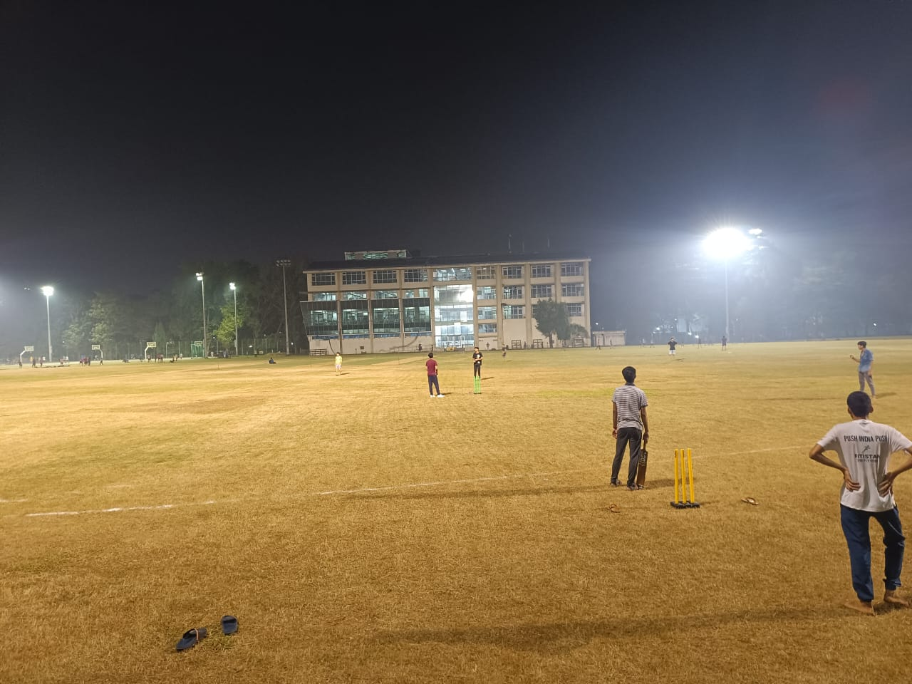
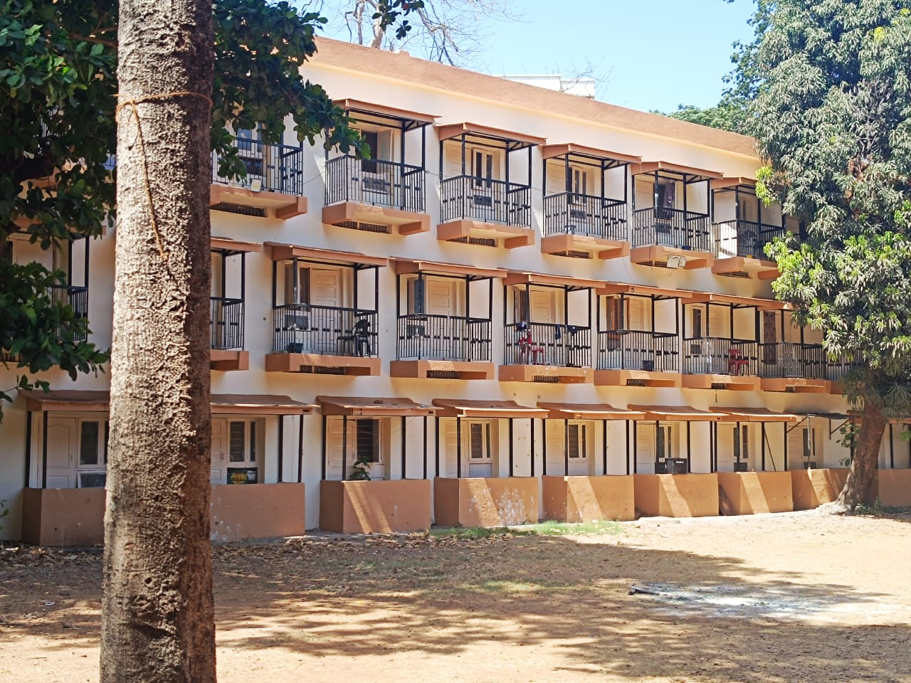

My Journey at IIT Bombay
Hi! I am Anish Patel, a third-year student pursuing B.Tech in Metallurgical Engineering and Material Sciences at IIT Bombay. I joined this institution in August 2023, marking the beginning of an exciting journey that would transform me in ways I never imagined.
Coming from Delhi, the transition to Mumbai was quite challenging. The vibrant campus life, diverse student community, and world-class facilities immediately caught my attention. What particularly excited me was the extensive sports infrastructure - from the sprawling grounds to the well-maintained courts, it was a sports enthusiast's paradise.
I quickly found my rhythm in the campus life, starting with badminton and basketball. The sports culture here is incredible, and I made some of my closest friends on the courts and fields. Beyond sports, I discovered a growing interest in the software engineering domain, particularly in machine learning and web development.
Currently, I'm actively learning Data Structures and Algorithms, balancing my passion for sports with academic pursuits. The journey has taught me the importance of time management and the value of pursuing multiple interests simultaneously.
My IIT Bombay journey began with excitement and nervousness as I stepped onto the campus for the first time. I was allotted H16, and the initial days were filled with orientation activities and campus exploration. The monsoon season was in full swing, and experiencing Mumbai's heavy rains was a completely new experience for me. I met my roommates and wingmates, who would soon become my closest friends and support system throughout this journey.
The academic semester kicked off, but I found myself drawn to the sports facilities more than ever. One of the most memorable moments was when my wingie Arvind convinced me to try swimming for the first time. I had always been terrified of water, but with his encouragement, I took the plunge - literally! The end semester brought the infamous all-nighter culture that every IITian experiences, and I learned the art of last-minute studying while watching India's World Cup journey.
The second semester was particularly special as the monsoon season ended and the cricket grounds became accessible again. This was when I truly fell in love with the sports culture at IIT Bombay. I participated in various sports activities, from cricket matches to badminton tournaments. The semester also brought my first experience with college elections, which was an eye-opening introduction to campus democracy. I also took time to explore Mumbai beyond the campus, visiting beaches and experiencing the city's vibrant culture.
The long 2.5-month summer break was a perfect opportunity to focus on areas I had been neglecting during the semester. I dedicated significant time to learning Data Structures and Algorithms, recognizing their importance for both academic and career growth. The break also allowed me to reflect on my first year and plan my goals for the upcoming academic year. I spent quality time with family and friends, recharging for the challenges ahead.
Starting my second year marked a significant evolution in my IIT Bombay journey. I moved to H3, which is widely considered the best hostel in the institute, and I quickly understood why. The hostel has an amazing vibe with dedicated sports grounds for football, cricket, volleyball, and other sports. As a sports enthusiast, this was like a dream come true. I also made a conscious effort to balance my sports activities with academic focus, understanding the importance of maintaining good grades.
December brought the much-anticipated Mood Indigo and Techfest, two of the biggest events in the IIT Bombay calendar. Experiencing these festivals was incredible - the cultural performances, technical competitions, and the overall energy of thousands of students coming together was unforgettable. These events gave me a deeper appreciation for the diverse talents and interests within the IIT Bombay community.
As I write this, I'm going in my fifth semester, continuing to enjoy the perfect balance of hostel life and academic pursuits. I'm actively participating in DSA contests and coding competitions, trying to improve my problem-solving skills. The sports grounds remain my happy place, where I can unwind and stay fit. I'm also focusing more on my core subjects in Metallurgical Engineering while exploring opportunities in software development.

cricket

H3 - Vitruvians
Click the button to get a random fact about my journey!